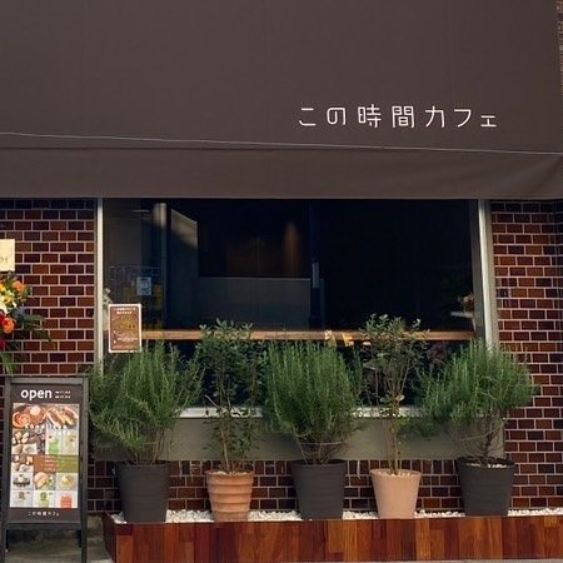

野菜たっぷりドライカレー
ドライカレー好きのオーナーが研究を重ねた一皿。1,200円。
SEASONAL MEALS & COFFEE — KAWAGOE
季節のごはんと、落ち着く時間。
川越・連雀町の隠れ家カフェ。
11:00–17:00（L.O.16:30）｜水曜定休
ABOUT
川越で生まれ育ったオーナーが「いつかは川越で喫茶店を」という想いで開いた、連雀町の隠れ家カフェ。直火で炊き上げた国産コシヒカリと、季節の食材でつくる料理が並びます。
店内は広々と落ち着いた昭和モダンの空間で、おひとりでもゆっくり過ごせます。コーヒーミルを選んで自分で豆を挽く、体験型の一杯も楽しめます。

この時間を、ゆっくりと。
SHOP INFO
| 店名 | この時間カフェ |
|---|---|
| 住所 | 埼玉県川越市連雀町4-10 |
| アクセス | 西武新宿線 本川越駅から徒歩5分 |
| 営業時間 | 11:00–17:00（L.O.16:30） |
| 定休日 | 水曜 |
| 電話 | 049-236-3848 |